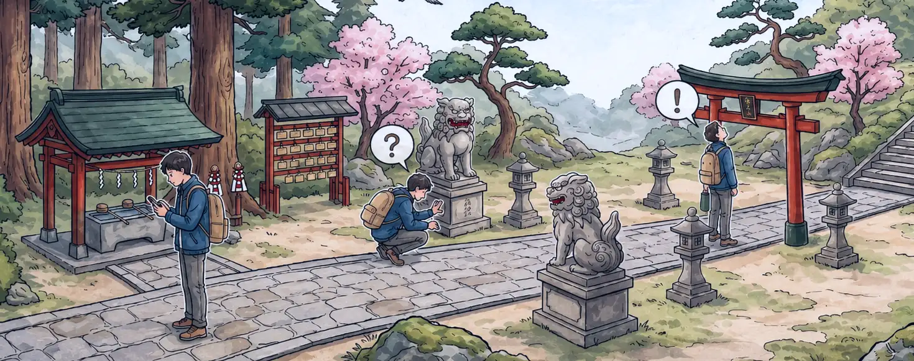

保留 LINE 作為入口
LINE App 入口整合
玩家可從 LINE 官方帳號、圖文選單、訊息連結進入活動頁面，不需另外安裝 App。
可增加的效果
實境解謎是一種將遊戲機制融入真實場域的體驗設計，在既有的場域或環境中設計一條虛構的架空故事線，玩家透過探索環境、解讀線索與邏輯推理，逐步解開謎題並推進劇情。
與一般遊戲最大的差別在於：線索存在於真實世界，而不在遊戲裡，玩家必須親自走到那個地點、看見那樣東西，才有辦法解開。

以下將以《無社之神》為例，介紹如何從真實場域中發掘適合轉化為遊戲的元素，並進一步發展成故事內容與關卡設計。
桃園神社——全臺保存最完整的日治時期神社建築，戰後改為忠烈祠，原有的神道祭祀與主祭神全數撤除，部分空間與象徵元素被改造或更名，轉化為新政權紀念「忠烈精神」的儀式場所。
靈異調查員王大熊被捲入一場突如其來的神祇失控危機，古怪的符文、兇惡的靈獸等各種意外接踵而來，情況遠比想像中要複雜且危險，必須在一切混亂爆發前，找到「歸位」的關鍵。
「無社之神」意指失去神社的神明，名稱直接呼應這處場域曾經歷的歷史變遷，當一座神社不再作為神社存在，原本被供奉其中的神明，又將何去何從？故事便是從這段真實的場域歷史出發，逐步延伸而成。
故事從艋舺龍山寺的求籤問卜開始，透過籤詩將線索帶往桃園神社。玩家抵達現場後，故事便順著神社參道的實際動線展開，依序經過鳥居、石燈籠、狛犬，最後來到本殿。
這樣安排的目的在於：讓平常沒有人會停下來看的東西，變成玩家必須注意的東西，玩家在推進故事的過程中，自然而然地注意到場域中的細節，原本可能只是匆匆經過的建築與物件，因為成為故事與解謎的一部分，而有了停下來觀察的理由。
為了尋找線索、理解故事，自然會主動走近這些場域元素，仔細看看它們原本的樣子。
掃描 QR Code 即可自 LINE 開啟《無社之神》，親自走一遍上述流程。
本範例已調整為可於任何地點體驗，無須前往現場。
遊戲內容僅用於說明呈現樣貌與操作概念，實際內容以正式報價單與專案合約載明為準。
本方案提供可整合於 LINE 流程中的 WEB 互動系統，作為既有遊戲內容的「數位互動層」。透過 WEB 介面承接任務操作、畫面互動與流程判定，補足 LINE 聊天介面作為遊戲框架的侷限，呈現更具沉浸感的互動體驗。
玩家可直接從 LINE 開啟活動頁面，業主亦可延續 LINE 官方帳號作為活動入口，降低玩家使用門檻，並保留後續觸及、導流與互動延伸的可能性。
將業主既有的活動流程、任務設計以及 LINE OA 機制，延伸為可在手機上操作的 WEB 互動體驗。
玩家可從 LINE 官方帳號、圖文選單、訊息連結進入活動頁面，不需另外安裝 App。
將既有的遊戲內容，轉換為可在手機上操作的互動頁面，實現原本 LINE 無法呈現的互動效果。
採用模組化 Web 架構設計，適用於各類型專案架構並加快開發速度。
※ 每一道關卡預設包含以下模組配置，超出此範圍視為客製化項目：
關卡中供玩家進行互動的謎題、線索與行動指引等內容。
額外線索呈現方式可依各關卡需求選用，詳見下方第 2 點。
檢核玩家提交的關卡互動結果，是否符合通關條件的判斷機制。
驗證的方式可依各關卡需求選用，詳見下方第 2 點。
當回答錯誤時予以視覺回應，並顯示提示按鈕已開啟 LINE OA 對話畫面；LINE OA 回覆內容與互動流程依業主既有設定為準。
※ 各關卡之線索呈現方式與答案驗證方式，可自下列模組中依需求選用；表列以外之特殊機制，請參考第四項之客製化驗證開發。
| 模組名稱 | 類型 | 說明 |
|---|---|---|
| 圖像線索 | 線索呈現 | 以圖片顯示額外的線索資訊。 |
| 外部網頁 | 線索呈現 | 內嵌一個外部網頁，顯示額外的線索資訊，須留意該網頁是否允許被嵌入。 |
| 鏡像貼圖 | 線索呈現 | 將圖像素材套用在相機模式下顯示的線索內容。 |
| AR 擴增圖檔＊ | 線索呈現 | 玩家掃描指定標記物後，才會顯示隱藏的線索內容。 |
| 文字嚴謹模式 | 驗證模式 | 進行答案驗證時，玩家輸入須與設定答案完全相符，包含大小寫、全半形與標點符號等差異均須一致。 |
| 文字寬鬆模式 | 驗證模式 | 進行答案驗證時，將無視玩家輸入的大小寫、頭尾空格與全半形之差異。 |
| 多組文字驗證 | 驗證模式 | 同一個關卡可以有不同的答案。 |
| 語序拼板 | 驗證模式 | 需要在限定的字詞中，拼出正確的語序才能通過驗證。 |
| 執行確認 | 驗證模式 | 點選按鈕即可通過驗證的形式，可用於請玩家確認事項、轉場、訊息告知。 |
| 項目選擇 | 驗證模式 | 提供多個選項選擇，適合用來做分支劇情或多重結局之設定。 |
| QR 掃描 | 驗證模式 | 在遊戲中開啟鏡頭掃描指定的 QR Code 來通過驗證。 |
| GPS 驗證＊ | 驗證模式 | 以 GPS 定位驗證，玩家須位於指定範圍才能通過驗證。 |
| 圖像識別＊ | 驗證模式 | 設置一組圖像識別物，作為驗證的依據。 |
＊ 上述模組名稱標示「＊」者，其實際可用性須依素材、場域、裝置與瀏覽器支援狀況確認；若需特殊判定邏輯或高度客製辨識，將另行評估與報價。
本項目旨在說明本專案之執行流程與各階段作業內容，以協助業主理解專案進行方式與節點安排。
實際權利義務、責任歸屬與相關限制，皆以正式合約條款為準。